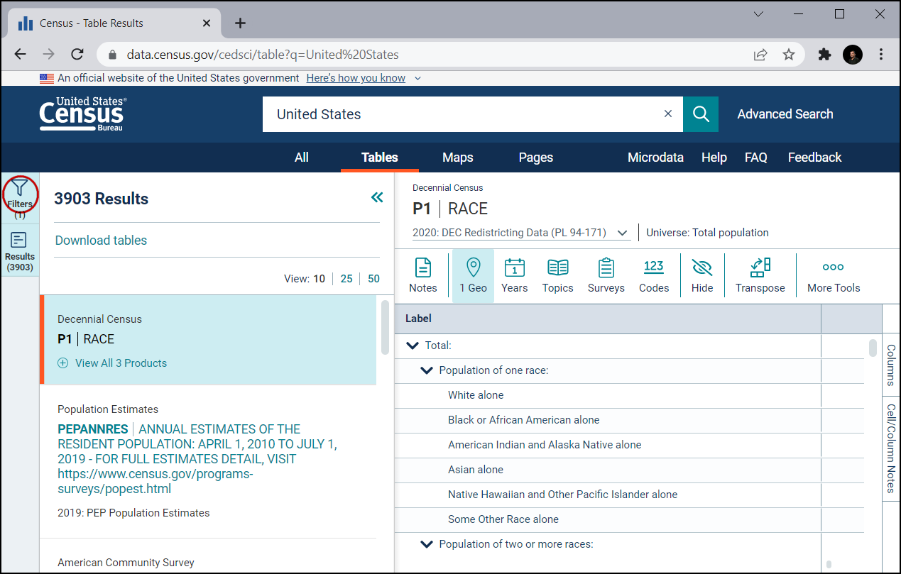
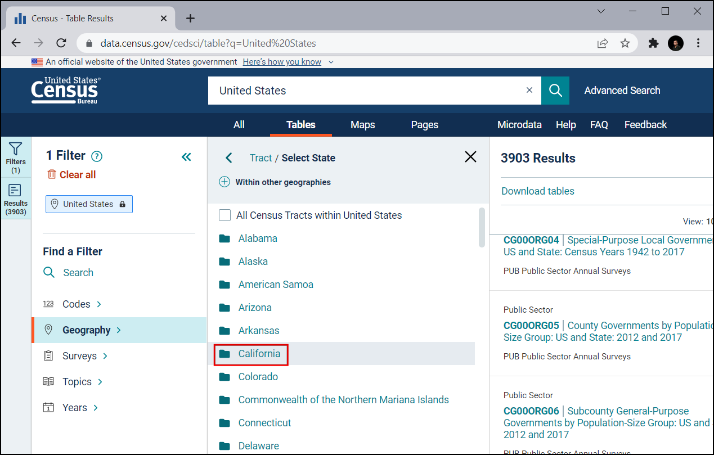
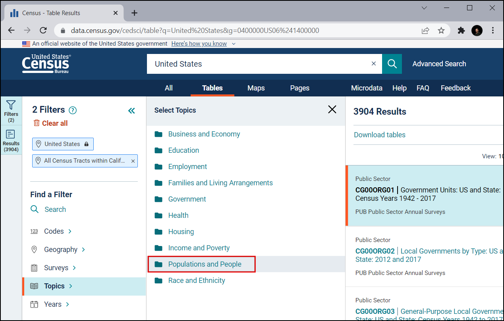
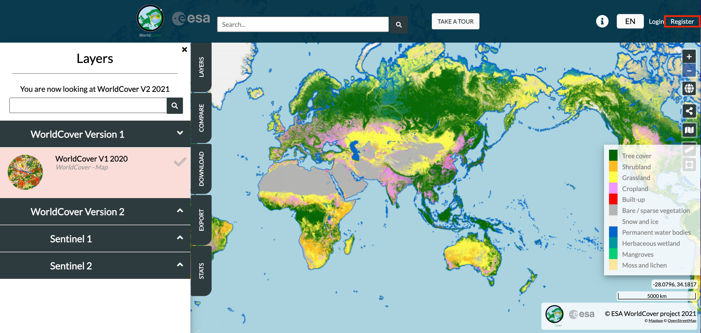
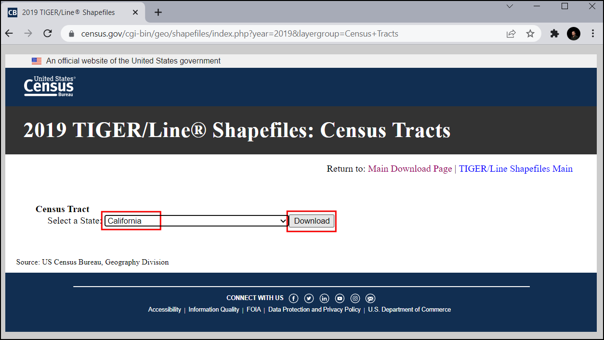
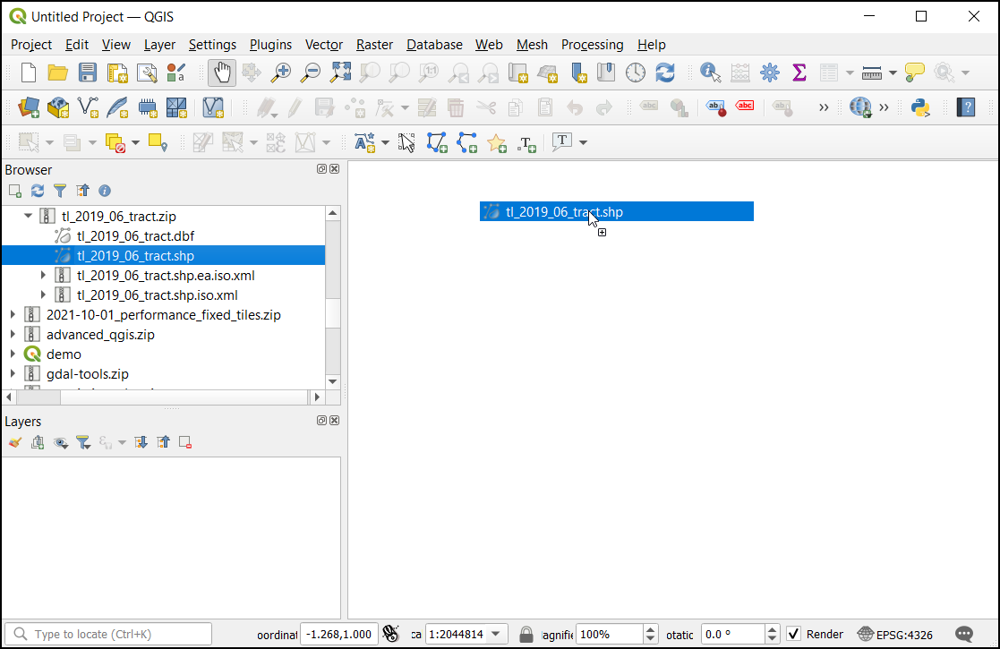
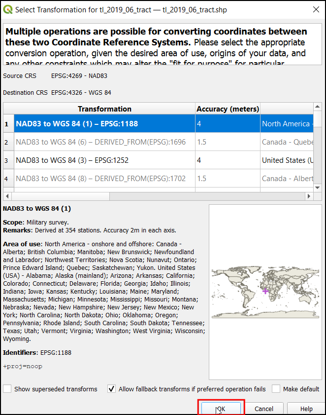
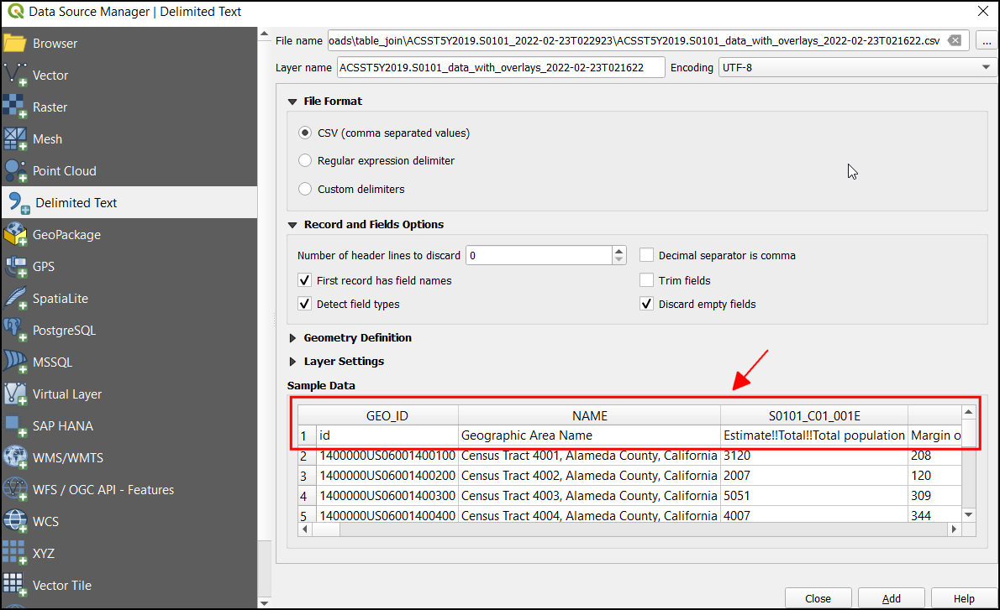
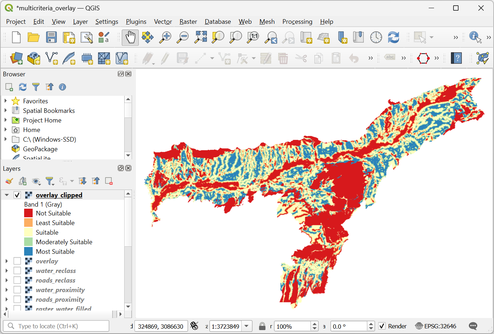

Samenvoegen van tabellen uitvoeren (QGIS3)¶
Niet elke gegevensset die u wilt gebruiken komt in een ruimtelijke indeling en vaak komen de gegevens als een tabel, zoals CSV, TSV of een werkblad. U zou het moeten koppelen met uw bestaande ruimtelijke gegevens om in uw analyses te kunnen gebruiken. Deze bewerking staat bekend als een Table Join en wordt uitgevoerd met het algoritme voor processing Attributen koppelen op veldwaarde.
Overzicht van de taak¶
We zullen een Shapefile gebruiken met bevolkingsgegevens voor Californië en gegevens over de bevolking van het US Census Bureau om een kaart van de bevolkingsdichtheid voor Californië te maken.
Andere vaardigheden die u zult leren¶
Een CSV-bestand, dat geen geometrie bevat, laden in QGIS.
Aanvullende koppen in CSV elimineren.
Een aanvullende kolom toevoegen aan een laag.
Een laag opmaken met een transparante lijn.
De gegevens ophalen¶
We willen een kaart voor de bevolkingsdichtheid voor de staat Californië, USA voorbereiden. We zullen eerst een tabel ophalen met de bevolkingsaantallen voor census-gebied in de staat.
Census-tabel downloaden¶
Bezoek US Census Bureau en klik op VIEW TABLES.

Klik op het pictogram Filters linksboven.

Laten we eerst filteren op Californië. Klik op Geography.

Klik op Tract, dat de informatie van de census-gebieden kan verschaffen.

Kies California.

Selecteer All Census Tracts within California. Dit maakt het voor ons mogelijk alle informatie te downloaden als één enkel bestand in plaats van elk gebied afzonderlijk te downloaden. Nu we de geografie hebben ingesteld, klik op Topics.
Onder Select Topics, kies Population and People.

Selecteer Population and People. Nu hebben we alle noodzakelijke filters geselecteerd. Sluit het venster met de filters.
Scroll in het paneel Download tables naar beneden naar S0101 | AGE AND SEX

Dit zal een gedetailleerde weergave van de gegevens openen. We zijn alleen geïnteresseerd in de bevolking en kunnen dusde Margin of Error uitschakelen zodat we alleen de noodzakelijke informatie krijgen en besparen op opslagruimte voor het bestand.

Klik op de knop Download.

De geselecteerde gegevens zijn beschikbaar over meerdere jaren en gebruiken verschillende technieken voor de schattingen. De ACS 5-Year Estimate Subject Tables wordt aanbevolen omdat schattingen over meerdere jaren de betrouwbaarheid van de gegevens verhogen. Het heeft ook geen gaten in de gegevens en bevat informatie voor alle gebieden. Selecteer het jaar
2019en klik op Download. Dit zal een zip-bestand downloaden. Eenmaal gedownload, pak het bestand uit op uw lokale schijf.

Grenzen van Census-gebieden downloaden¶
We moeten. om een kaart te kunnen maken vanuit de tabel van Census, ook de grenzen hebben die elke gebied van census weergeeft in de staat Californië.
Bezoek TIGER Line Shapefiles en klik op Web Interface.

Selecteer
2019onder Select year, in Select a layer typeCensus Tractsen klik op Submit.
Selecteer
Californiain Select a State en klik op Download. Dit zal een zip-bestand downloaden dat de vectorbestanden bevat.

Voor het gemak kunt u direct een kopie van beide gegevenssets downloaden vanaf de links hieronder:
Gegevensbron: [TIGER] [USCENSUS]
Procedure¶
Zoek in de QGIS Browser naar het bestand
tl_2019_06_tract.zipen vergroot het. Selecteer het bestandtl_2019_06_tract.shpen sleep het naar het kaartvenster.

Het dialoogvenster Transformatie selecteren zal openen om te converteren van EPSG:4269 naar EPSG:4326. Dit dialoogvenster biedt verscheidene transformaties aan om te converteren tussen de coördinaten tussen deze projecties. Laat de selectie op de standaardkeuze en klik op OK.

U zult de laag
tl_2019_06_tractzien geladen in het paneel Lagen. Deze laag bevat de grenzen van de census-gebieden in Californië. Klik met rechts op de laagtl_2019_06_tracten selecteer Attributentabel openen.

Bekijk de attributen van de laag. We hebben een uniek en algemeen attribuut voor elk object nodig om een tabel met deze laag te koppelen. In dit geval zijn er 8057 individuele gebiedsrecords met het veld
GEOID. Deze kolom kan worden gebruikt om deze laag te koppelen aan elke andere laag of tabel die dezelfde ID bevat.

Klik op Databronnen beheren openen om de gegevens vanuit de tabel te laden.

In het dialoogvenster Databronne beheren, kies Tekengescheiden tekst. Dan, aan de rechterkant, klik op de
…naast Bestandsnaam en blader naar de niet uitgepakte map met de CSV met de bevolking van Californië.

Nu kunnen we onder Voorbeeldgegevens, de gegevens inspecteren, nog voordat ze worden geladen als laag. De weergave laat zien dat de gegevenstabel twee kopregels bevat.

Voor het verwijderen van de aanvullende kopregel, stel onder Opties voor record en velden het Aantal kopregels die overgeslagen kunnen worden in op
1. Nu zal de tabel de juiste kolomkoppen bevatten. Selecteer, mdat deze laag alleen tabulaire gegevens bevatdata,Geen geometrieën (alleen attributentabel)onder Geometrie definitie. Klik op Toevoegen om het als een laag toe te voegen en klik dan op Close om dit dialoogvenster te sluiten.

De CSV zal nu worden geïmporteerd als een tabel in QGIS en zal verschijnen als
ACST5Y2019.S0101in het paneel Lagen. Klik nu met rechts op de laag en selecteer Attributentabel openen.

De kolom
idbevat de unieke ID voor elk record, wat kan worden gebruikt om de tabel te koppelen met de laagtl_2019_06_tract. Als u de waarden van de kolomidvergelijkt met de kolomGEOIDvan de laagtl_2019_06_tract, zult u zien dat die wordt voorafgegaan door 1400000US. De waarden moeten exact overeenkomen om deze twee tabellen met succes te koppelen. Laten we het voorvoegsel verwijderen en een nieuwe kolom toevoegen met de laatste 11 tekens die de waarde bevatten die een exacte overeenkomst is.

Open, om een nieuwe kolom met de laatste 11 tekens te maken, de Toolbox van Processing door te gaan naar , en te zoeken naar en te lokaliseren het algoritme .

In het dialoogvenster Veld calculator, selecteer
ACST5Y2019.S0101als de Invoerlaag, voergeoidin als Veldnaam, en selecteerTekst (string)in als Type resultaatveld `. Zoek nu naar ``substr` in expressies. We kunnen deze functie gebruiken om het vereiste gedeelte uit het veld id uit te nemen.

Voer de onderstaande expressie in. We gebruiken de functie substr en nemen de waarde uit vanaf de positie -11 (negatieve waarde wordt gerekend vanaf het einde). Het uiteindelijke resultaat kan worden bekeken in het gedeelte Voorbeeld. Klik op Uitvoeren.
substr("id", -11)
Nu zal een nieuwe laag
Berekendworden geladen in het kaartvenster. Laten we de attributentabel inspecteren. Een nieuwe kolomgeoidmet de waarde die overeenkomt met het census-gebied zal aanwezig zijn.

Open, om de tabellen te koppelen, de Toolbox van Processing door te gaan naar , en te zoeken naar en te lokaliseren het algoritme .

Selecteer, in het dialoogvenster Attributen koppelen op veldwaarde,
tl_2019_06_tractals Invoerlaag enGEOIDals het Tabelveld. SelecteerBerekendals de Invoerlaag 2 engeoidals Tabelveld 2. Klik, onder Velden van laag 2 om te kopiëren, op de….

Selecteer
Geographic Area Name,Estimate!!Total!!Total populationengeoid. Klik op OK.

Selecteer de optie Records negeren die niet konden worden verbonden. Dit zal elk extra record in de tabel van de bevolking verwijderen. Klik op de knop … onder Samengevoegde laag om de locatie voor de uitvoer te selecteren en selecteer
Opslaan als bestand….

Noem het uit te voeren GeoPackage
california_total_population.gpkg. Klik op Uitvoeren.

Verifieer, als de verwerking is voltooid, dat het algoritme met succes werd uitgevoerd en dat alle 8057 objecten zijn gekoppeld. Klik op Close.

U zult een nieuwe laag
california_total_populationzien geladen in het paneel Lagen. Op dit punt zijn de velden uit het CSV-bestand gekoppeld met de laag met census-gebieden. Nu we de gegevens van de bevolking in de laag met census-gebieden hebben, kunnen we die opmaken om een visualisatie van de verdeling van de bevolkingsdichtheid te maken. Klik op de knop Paneel Laag opmaken openen button.

Selecteer, in het paneel Laag opmaken,
Gradueeluit het keuzemenu. Omdat we een kaart willen maken met de dichtheid van de bevolking, willen we verschillende kleuren toewijzen aan elk object census-gebied, gebaseerd on de schatting van de dichtheid van de bevolking. We hebben de bevolking in het veld Estimate!!Total!!Total population, en het veld met het gebied in ALAND. Klik op de knop Expressie, om het percentage te berekenen van de totale populatie in elk cencus-gebied.
Notitie
Bij het maken van een thematische (choroplethische) kaart zoals deze, is het belangrijk om de waarden die u in kaart brengt te normaliseren. In kaart brengen van totale aantallen per polygoon is niet juist. Het is belangrijk de waarden te normaliseren door ze te delen door het gebied. Wanneer u totalen weergeeft, zoals criminaliteit, kunt u ze normaliseren door ze te delen door de totale bevolking, dus het in kaart brengen van de hoeveelheid criminaliteit en niet de criminaliteit. Leer meer op

Voer de volgende expressie in om de dichtheid van de bevolking te berekenen. Het gebied van het object wordt gegeven in vierkante kilometers. We converteren het dan naar vierkante meters door het te vermenigvuldigen met
1000000en berekenen de dichtheid van de bevolking met de formule Population/Area. Bekijk het resultaat en klik op OK.
1000000 * ("Estimate!!Total!!Total population"/"ALAND")
In het Paneel Laag opmaken, klik op Classificeren en voer voor het aantal klassen
10in.

Klik op het kleurverloop om het kleurverloop
RdYlGnte kiezen.

De hogere dichtheid heeft de overhand, dus laten we groen aan de lagere dichtheid toewijzen en rood aan de gebieden met hogere dichtheid. Klik op het kleurverloop en kies Kleurverloop omdraaien.

Nu hebben we een goed uitziende, informatieve visualisatie van de dichtheid van de bevolking in Californië. Laten we de grens van elk census-gebied transparant maken om het nog beter te maken. Klik op de tab Symbool.

Klik op Lijnkleur en klik op
Transparante lijn.

De staven kunnen aangepast worden, klik op de Waarden. Dit zal een dialoogvenster openen om de waarde voor onder- en bovengrens in te voeren.

Als u tevreden bent, sluit het paneel Laag opmaken. We hebben nu een net uitziende informatieve visualisatie van de dichtheid van de bevolking in Californië.

If you want to give feedback or share your experience with this tutorial, please comment below. (requires GitHub account)